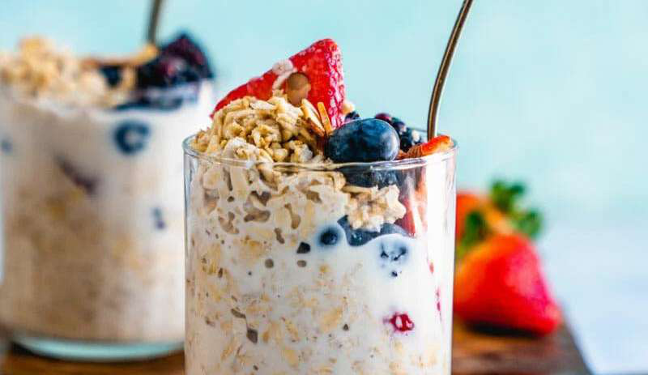

Overnight Oats
Ingredients
- 120 ml Unsweetened Almond Milk
- 40 g Blueberries
- 60 g Chopped Strawberries
- 50 g oats
- 30 g protein powder
- 8 g chia seeds
- 5 g Queens Sugar Free Maple Syrup
Instructions
- Pour rolled oats, unsweetened almond milk and protein power into bowl or container and mix
- Leave in fridge overnight, the raw oats will absorb the milk and protein powder making them soft and tasty.
- In the morning, add blueberries, chopped strawberries then top off with a sprinkle of chia seeds and a drizzle of maple syrup.
Source PDF page 19